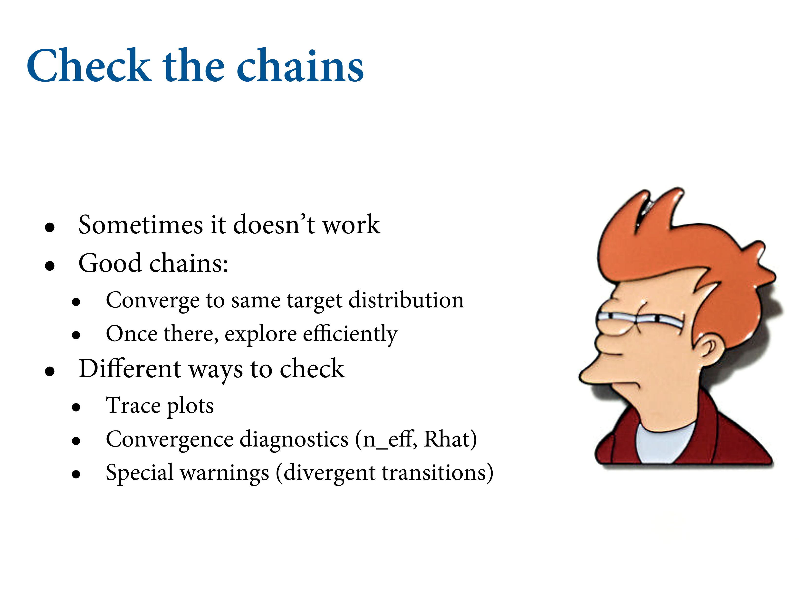

9.4 Easy HMC: ulam
- Preprocess any variable transformations
- Construct a clean data list with only the variables you will use.
library(rethinking)
data(rugged)
d <- rugged
d$log_gdp <- log(d$rgdppc_2000)
dd <- d[ complete.cases(d$rgdppc_2000) , ]
dd$log_gdp_std <- dd$log_gdp / mean(dd$log_gdp)
dd$rugged_std <- dd$rugged / max(dd$rugged)
dd$cid <- ifelse( dd$cont_africa==1 , 1 , 2 )
Run quap as before. Now let’s do this with a MC.
m8.3 <- quap(
alist(
log_gdp_std ~ dnorm( mu , sigma ) ,
mu <- a[cid] + b[cid]*( rugged_std - 0.215 ) ,
a[cid] ~ dnorm( 1 , 0.1 ) ,
b[cid] ~ dnorm( 0 , 0.3 ) ,
sigma ~ dexp( 1 )
) , data=dd )
precis( m8.3 , depth=2 )## mean sd 5.5% 94.5%
## a[1] 0.8865640 0.015674552 0.86151302 0.91161495
## a[2] 1.0505666 0.009935872 1.03468714 1.06644602
## b[1] 0.1324981 0.074199237 0.01391344 0.25108286
## b[2] -0.1426057 0.054745410 -0.23009945 -0.05511197
## sigma 0.1094859 0.005934188 0.10000194 0.118969909.4.1. Preparation
Same formula, but slim dataset with just the variables of interest. 4 chains on separate cores.
dat_slim <- list(
log_gdp_std = dd$log_gdp_std,
rugged_std = dd$rugged_std,
cid = as.integer( dd$cid )
)
str(dat_slim)## List of 3
## $ log_gdp_std: num [1:170] 0.88 0.965 1.166 1.104 0.915 ...
## $ rugged_std : num [1:170] 0.138 0.553 0.124 0.125 0.433 ...
## $ cid : int [1:170] 1 2 2 2 2 2 2 2 2 1 ...9.4.2. Sampling from the posterior
m9.1 <- ulam(
alist(
log_gdp_std ~ dnorm( mu , sigma ) ,
mu <- a[cid] + b[cid]*( rugged_std - 0.215 ) ,
a[cid] ~ dnorm( 1 , 0.1 ) ,
b[cid] ~ dnorm( 0 , 0.3 ) ,
sigma ~ dexp( 1 )
) , data=dat_slim , chains=1 )## This is cmdstanr version 0.4.0.9000## - Online documentation and vignettes at mc-stan.org/cmdstanr## - CmdStan path set to: /Users/brettell/.cmdstanr/cmdstan-2.27.0## - Use set_cmdstan_path() to change the path## Running MCMC with 1 chain, with 1 thread(s) per chain...
##
## Chain 1 Iteration: 1 / 1000 [ 0%] (Warmup)
## Chain 1 Iteration: 100 / 1000 [ 10%] (Warmup)
## Chain 1 Iteration: 200 / 1000 [ 20%] (Warmup)
## Chain 1 Iteration: 300 / 1000 [ 30%] (Warmup)
## Chain 1 Iteration: 400 / 1000 [ 40%] (Warmup)
## Chain 1 Iteration: 500 / 1000 [ 50%] (Warmup)
## Chain 1 Iteration: 501 / 1000 [ 50%] (Sampling)
## Chain 1 Iteration: 600 / 1000 [ 60%] (Sampling)
## Chain 1 Iteration: 700 / 1000 [ 70%] (Sampling)
## Chain 1 Iteration: 800 / 1000 [ 80%] (Sampling)
## Chain 1 Iteration: 900 / 1000 [ 90%] (Sampling)
## Chain 1 Iteration: 1000 / 1000 [100%] (Sampling)
## Chain 1 finished in 0.1 seconds.
ulam translates this into raw Stan code. A bunch of formal variable definitions.

What happens here is it reports each chain. Warmup figures out the step size. Total samples is the length of each chain minus the warmup. You won’t need more than a couple of thousand samples to get a good estimate.

n_eff is the number of effective samples. Note that it’s greater than the number of samples from the MC. True because it takes dispersed samples. The number of samples you would get if there was no auto-correlation between sequential samples. Rhat is the Gelman-Ruben diagnostic. You want it to converge across chains. They should all look the same and be exchangeable.
precis(m9.1, depth = 2)## mean sd 5.5% 94.5% n_eff Rhat4
## a[1] 0.8863693 0.016857778 0.86122129 0.9147263 716.3739 1.002273
## a[2] 1.0511318 0.010164509 1.03506230 1.0675088 823.3144 1.001111
## b[1] 0.1321142 0.073856498 0.01366032 0.2481505 489.0231 1.003188
## b[2] -0.1415806 0.057097726 -0.23539425 -0.0570833 572.0549 1.015222
## sigma 0.1117945 0.006053714 0.10264904 0.1219095 492.8719 1.0024709.4.3. Sampling agian, in parallel
m9.1 <- ulam(
alist(
log_gdp_std ~ dnorm( mu , sigma ) ,
mu <- a[cid] + b[cid]*( rugged_std - 0.215 ) ,
a[cid] ~ dnorm( 1 , 0.1 ) ,
b[cid] ~ dnorm( 0 , 0.3 ) ,
sigma ~ dexp( 1 )
) , data=dat_slim , chains=4 , cores=4 )## Running MCMC with 4 parallel chains, with 1 thread(s) per chain...
##
## Chain 1 Iteration: 1 / 1000 [ 0%] (Warmup)
## Chain 1 Iteration: 100 / 1000 [ 10%] (Warmup)
## Chain 1 Iteration: 200 / 1000 [ 20%] (Warmup)## Chain 1 Informational Message: The current Metropolis proposal is about to be rejected because of the following issue:## Chain 1 Exception: normal_lpdf: Scale parameter is 0, but must be positive! (in '/var/folders/24/qgbyngx94ygb2fg_q0x5jf_r8kxxgt/T/Rtmp64D9Qu/model-123262894e945.stan', line 19, column 4 to column 39)## Chain 1 If this warning occurs sporadically, such as for highly constrained variable types like covariance matrices, then the sampler is fine,## Chain 1 but if this warning occurs often then your model may be either severely ill-conditioned or misspecified.## Chain 1## Chain 2 Iteration: 1 / 1000 [ 0%] (Warmup)
## Chain 2 Iteration: 100 / 1000 [ 10%] (Warmup)
## Chain 2 Iteration: 200 / 1000 [ 20%] (Warmup)
## Chain 3 Iteration: 1 / 1000 [ 0%] (Warmup)## Chain 3 Informational Message: The current Metropolis proposal is about to be rejected because of the following issue:## Chain 3 Exception: normal_lpdf: Scale parameter is 0, but must be positive! (in '/var/folders/24/qgbyngx94ygb2fg_q0x5jf_r8kxxgt/T/Rtmp64D9Qu/model-123262894e945.stan', line 19, column 4 to column 39)## Chain 3 If this warning occurs sporadically, such as for highly constrained variable types like covariance matrices, then the sampler is fine,## Chain 3 but if this warning occurs often then your model may be either severely ill-conditioned or misspecified.## Chain 3## Chain 4 Iteration: 1 / 1000 [ 0%] (Warmup)
## Chain 4 Iteration: 100 / 1000 [ 10%] (Warmup)
## Chain 4 Iteration: 200 / 1000 [ 20%] (Warmup)
## Chain 4 Iteration: 300 / 1000 [ 30%] (Warmup)## Chain 4 Informational Message: The current Metropolis proposal is about to be rejected because of the following issue:## Chain 4 Exception: normal_lpdf: Scale parameter is 0, but must be positive! (in '/var/folders/24/qgbyngx94ygb2fg_q0x5jf_r8kxxgt/T/Rtmp64D9Qu/model-123262894e945.stan', line 19, column 4 to column 39)## Chain 4 If this warning occurs sporadically, such as for highly constrained variable types like covariance matrices, then the sampler is fine,## Chain 4 but if this warning occurs often then your model may be either severely ill-conditioned or misspecified.## Chain 4## Chain 1 Iteration: 300 / 1000 [ 30%] (Warmup)
## Chain 1 Iteration: 400 / 1000 [ 40%] (Warmup)
## Chain 1 Iteration: 500 / 1000 [ 50%] (Warmup)
## Chain 1 Iteration: 501 / 1000 [ 50%] (Sampling)
## Chain 1 Iteration: 600 / 1000 [ 60%] (Sampling)
## Chain 1 Iteration: 700 / 1000 [ 70%] (Sampling)
## Chain 1 Iteration: 800 / 1000 [ 80%] (Sampling)
## Chain 1 Iteration: 900 / 1000 [ 90%] (Sampling)
## Chain 2 Iteration: 300 / 1000 [ 30%] (Warmup)
## Chain 2 Iteration: 400 / 1000 [ 40%] (Warmup)
## Chain 2 Iteration: 500 / 1000 [ 50%] (Warmup)
## Chain 2 Iteration: 501 / 1000 [ 50%] (Sampling)
## Chain 2 Iteration: 600 / 1000 [ 60%] (Sampling)
## Chain 2 Iteration: 700 / 1000 [ 70%] (Sampling)
## Chain 2 Iteration: 800 / 1000 [ 80%] (Sampling)
## Chain 2 Iteration: 900 / 1000 [ 90%] (Sampling)
## Chain 3 Iteration: 100 / 1000 [ 10%] (Warmup)
## Chain 3 Iteration: 200 / 1000 [ 20%] (Warmup)
## Chain 3 Iteration: 300 / 1000 [ 30%] (Warmup)
## Chain 3 Iteration: 400 / 1000 [ 40%] (Warmup)
## Chain 3 Iteration: 500 / 1000 [ 50%] (Warmup)
## Chain 3 Iteration: 501 / 1000 [ 50%] (Sampling)
## Chain 3 Iteration: 600 / 1000 [ 60%] (Sampling)
## Chain 3 Iteration: 700 / 1000 [ 70%] (Sampling)
## Chain 3 Iteration: 800 / 1000 [ 80%] (Sampling)
## Chain 4 Iteration: 400 / 1000 [ 40%] (Warmup)
## Chain 4 Iteration: 500 / 1000 [ 50%] (Warmup)
## Chain 4 Iteration: 501 / 1000 [ 50%] (Sampling)
## Chain 4 Iteration: 600 / 1000 [ 60%] (Sampling)
## Chain 4 Iteration: 700 / 1000 [ 70%] (Sampling)
## Chain 4 Iteration: 800 / 1000 [ 80%] (Sampling)
## Chain 4 Iteration: 900 / 1000 [ 90%] (Sampling)
## Chain 4 Iteration: 1000 / 1000 [100%] (Sampling)
## Chain 4 finished in 0.2 seconds.
## Chain 1 Iteration: 1000 / 1000 [100%] (Sampling)
## Chain 2 Iteration: 1000 / 1000 [100%] (Sampling)
## Chain 3 Iteration: 900 / 1000 [ 90%] (Sampling)
## Chain 3 Iteration: 1000 / 1000 [100%] (Sampling)
## Chain 1 finished in 0.2 seconds.
## Chain 2 finished in 0.2 seconds.
## Chain 3 finished in 0.2 seconds.
##
## All 4 chains finished successfully.
## Mean chain execution time: 0.2 seconds.
## Total execution time: 0.5 seconds.show( m9.1 )## Hamiltonian Monte Carlo approximation
## 2000 samples from 4 chains
##
## Sampling durations (seconds):
## warmup sample total
## chain:1 0.14 0.07 0.22
## chain:2 0.12 0.08 0.21
## chain:3 0.10 0.06 0.16
## chain:4 0.14 0.07 0.21
##
## Formula:
## log_gdp_std ~ dnorm(mu, sigma)
## mu <- a[cid] + b[cid] * (rugged_std - 0.215)
## a[cid] ~ dnorm(1, 0.1)
## b[cid] ~ dnorm(0, 0.3)
## sigma ~ dexp(1)precis( m9.1 , 2 )## mean sd 5.5% 94.5% n_eff Rhat4
## a[1] 0.8862612 0.016052160 0.86087777 0.91244762 3039.869 1.0004433
## a[2] 1.0506887 0.010431308 1.03427780 1.06749165 3183.331 1.0000783
## b[1] 0.1302839 0.073973317 0.01444338 0.25037649 2690.883 0.9990496
## b[2] -0.1439431 0.055033741 -0.23355094 -0.05448671 2595.312 1.0001181
## sigma 0.1116414 0.005945456 0.10247334 0.12141777 2870.237 0.9995166If there were only 2000 samples in total, how can we have more than 2000 effective samples for each parameter? It’s no mistake. The adaptive sampler that Stan uses is so good, it can actually produce sequential samples that are better than uncorrelated. They are anti-correlated. This means it can explore the posterior distribution so efficiently that it can beat random.
9.4.4. Visualization

pairs(m9.1)
9.4.5. Checking the chain


# Error: 'traceplot' is not an exported object from 'namespace:rethinking'
rethinking::traceplot( m9.1)rethinking::trankplot( m9.1)

What you want to see are these hairy caterpillars.
Now, how is this chain a healthy one? Typically we look for three things in these trace plots: (1) stationarity, (2) good mixing, and (3) convergence.